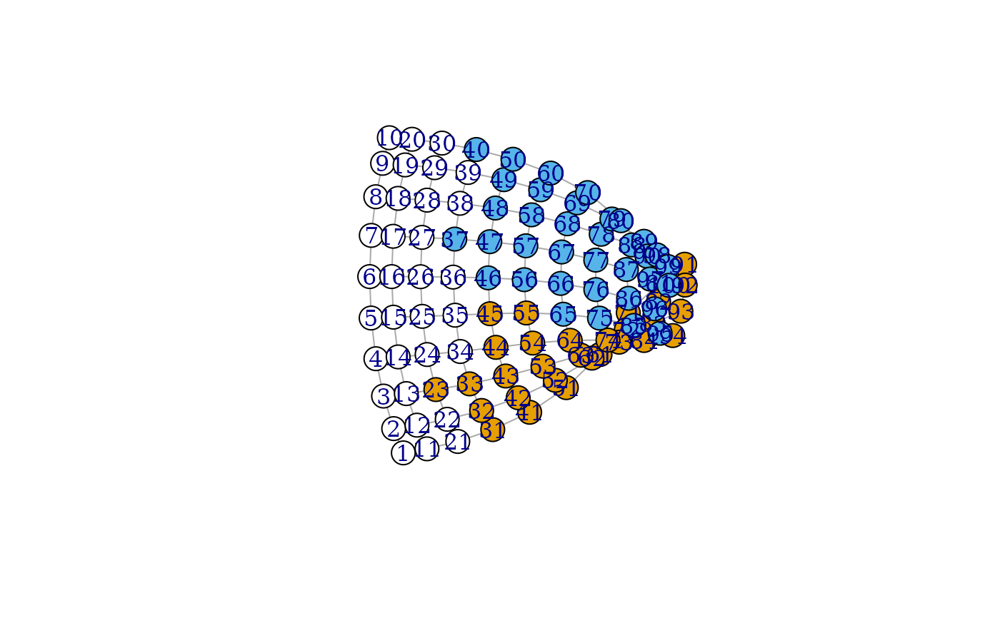

![[Experimental]](figures/lifecycle-experimental.svg)
This function partitions the vertices of a graph based on a set of generator vertices. Each vertex is assigned to the generator vertex from (or to) which it is closest.
groups() may be used on the output of this function.
Arguments
- graph
The graph to partition into Voronoi cells.
- generators
The generator vertices of the Voronoi cells.
- ...
These dots are for future extensions and must be empty.
- weights
Possibly a numeric vector giving edge weights. If this is
NULLand the graph has aweightedge attribute, then the attribute is used. If this isNAthen no weights are used (even if the graph has aweightattribute). In a weighted graph, the length of a path is the sum of the weights of its constituent edges.- mode
Character string. In directed graphs, whether to compute distances from generator vertices to other vertices (
"out"), to generator vertices from other vertices ("in"), or ignore edge directions entirely ("all"). Ignored in undirected graphs.- tiebreaker
Character string that specifies what to do when a vertex is at the same distance from multiple generators.
"random"assigns a minimal-distance generator randomly,"first"takes the first one, and"last"takes the last one.
Value
A named list with two components:
- membership
numeric vector giving the cluster id to which each vertex belongs.
- distances
numeric vector giving the distance of each vertex from its generator
See also
Community detection
as_membership(),
cluster_edge_betweenness(),
cluster_fast_greedy(),
cluster_fluid_communities(),
cluster_infomap(),
cluster_label_prop(),
cluster_leading_eigen(),
cluster_leiden(),
cluster_louvain(),
cluster_optimal(),
cluster_spinglass(),
cluster_walktrap(),
compare(),
groups(),
make_clusters(),
membership(),
modularity.igraph(),
plot_dendrogram(),
split_join_distance()
Examples
g <- make_lattice(c(10,10))
clu <- voronoi_cells(g, c(25, 43, 67))
groups(clu)
#> $`0`
#> [1] 2 4 5 6 7 8 9 10 11 14 15 16 17 18 19 20 23 24 25 26 27 28 29 30 35
#> [26] 36 37 40 45 55
#>
#> $`1`
#> [1] 1 3 12 13 21 22 31 32 33 34 41 42 43 44 51 52 53 54 61 62 63 71 72 73 81
#> [26] 82 83 84 91 92 93 94
#>
#> $`2`
#> [1] 38 39 46 47 48 49 50 56 57 58 59 60 64 65 66 67 68 69 70
#> [20] 74 75 76 77 78 79 80 85 86 87 88 89 90 95 96 97 98 99 100
#>
plot(g, vertex.color=clu$membership)
